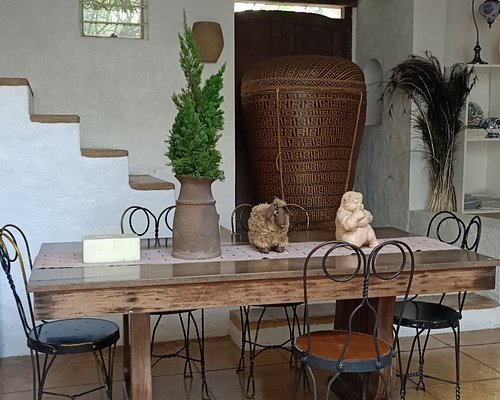
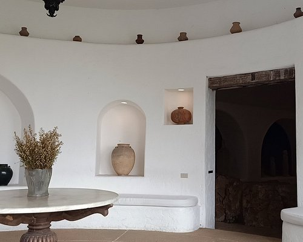
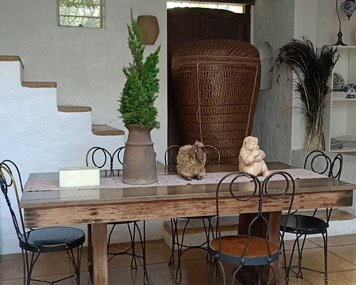
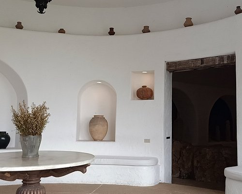
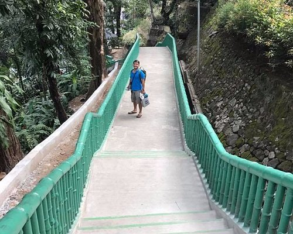
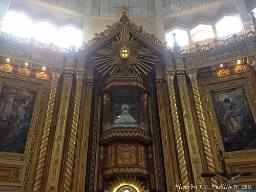
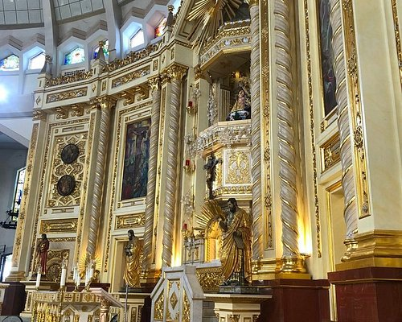
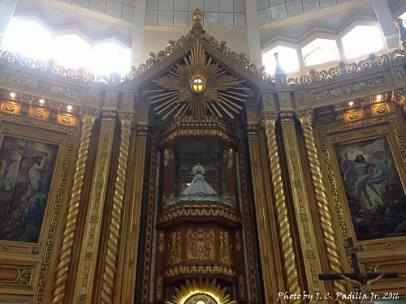
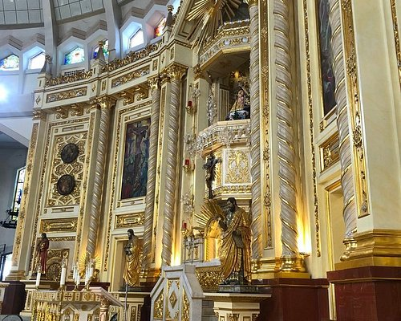
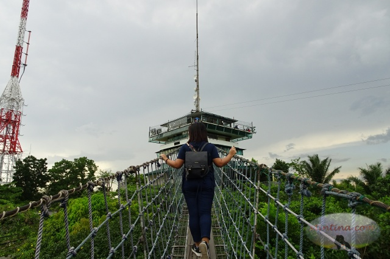

Discover Antipolo
Experience the culture, nature, and breathtaking views of the City of Antipolo
Explore NowMust-Visit Destinations
Discover the beauty and culture of Antipolo through these amazing attractions

Hinulugang Taktak Falls
Experience the natural beauty of this historic waterfall, perfect for nature lovers and photography enthusiasts.
Learn More
Pinto Art Museum
Immerse yourself in contemporary Filipino art in this beautiful museum surrounded by lush gardens.
Learn More
Antipolo Cathedral
Visit the National Shrine of Our Lady of Peace and Good Voyage, a significant religious landmark.
Learn More
Cloud 9
Enjoy panoramic views of Metro Manila from this popular viewpoint with thrilling hanging bridge.
Learn More
Mount Purro Nature Reserve
Discover pristine nature and eco-tourism activities in this beautiful mountain reserve with hiking trails and wildlife.
Learn MoreGallery of Antipolo's Beauty
Discover the stunning landscapes, cultural spots, and hidden gems that make Antipolo a must-visit destination.
Pinto Art Museum
 



Immerse yourself in contemporary Filipino art in this beautiful museum surrounded by lush gardens and modern architecture.
Hinulugang Taktak Falls



Experience the natural beauty of this historic waterfall, perfect for nature lovers and photography enthusiasts.
Mount Purro Nature Reserve


Discover pristine nature and eco-tourism activities in this beautiful mountain reserve with hiking trails, wildlife viewing, and sustainable tourism practices.
Antipolo Cathedral
 




Visit this iconic pilgrimage site, known for its rich history, Spanish-era architecture, and the revered image of Our Lady of Peace and Good Voyage.
Cloud 9



Experience breathtaking panoramic views above the clouds at this stunning mountain resort, perfect for relaxation, sunrise watching, and unforgettable memories.